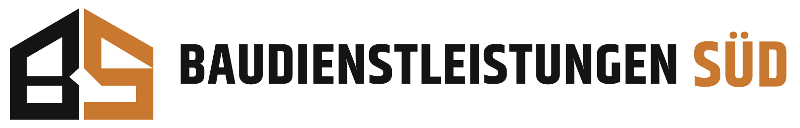
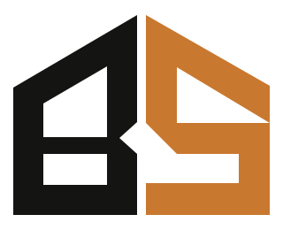

Markenhandbuch · Intern
Corporate
Design.
Das verbindliche Erscheinungsbild von Baudienstleistungen Süd – abgeleitet aus der Website. Gilt für Website, Drucksachen, Fahrzeugbeschriftung, Arbeitskleidung und alle künftigen Materialien. Technische Quelle: assets/brand.css · Logo & Icons: design/.
1. Markenkern
Die Marke steht für bodenständige, verlässliche Bauarbeit mit klarer Kommunikation. Das Design übersetzt das in drei Prinzipien:
- Kantig statt verspielt – keine abgerundeten Ecken, keine Verläufe als Dekoration, keine Schatten-Spielereien.
- Dunkel & warm – Anthrazit als Fundament, Kupferorange als einziger Farbakzent (erinnert an Holz, Schalung, Warnfarbe auf der Baustelle).
- Viel Raum, große Worte – große, eng gesetzte Headlines, klare Flächen, feine Linien als Ordnungssystem.
2. Logo
Das Logo besteht aus dem kantigen, dachförmigen BS-Monogramm (Haus-Silhouette: „B" in Anthrazit, „S" in Kupferorange) und der schmalen, technischen Wortmarke. „SÜD" ist immer der farbige Anker. Diese Form ist verbindlich – Quelle: Ordner design/, eingebundene Dateien in assets/.


Dateien
logo-horizontalHauptlogo für helle Hintergründe (Anthrazit + Kupferorange)logo-horizontal-hellHauptlogo für dunkle Hintergründe (Weiß + Helles Kupfer)logo-signet/-hellkompaktes BS-Signet für kleine Flächen, Favicons, Stempelfavicons/komplettes Favicon-/PWA-Paket inkl. Social-Preview (1200×630)
Regeln
- Auf hellem Grund die Hauptvariante, auf dunklem Grund die helle Variante – keine weiteren Farbkombinationen erfinden.
- Auf Kupferflächen kein Logo platzieren; dort reicht Text in Weiß.
- Schutzraum: rundum mindestens die halbe Höhe des „S" freihalten.
- Mindestgrößen: Signet nicht unter 24 px, vollständige Wortmarke nicht unter 180 px Breite.
- Nicht verzerren, nicht drehen, keine Kontur, kein Schatten, Farben nie tauschen.
- Technik: Alle Logo-Dateien sind schriftunabhängige Pfadgrafiken – SVG und PNG sehen auf jedem Gerät identisch aus. Im Web bevorzugt die SVGs einsetzen (randscharf in jeder Größe); PNGs für Office, Druckdaten und Plattformen ohne SVG-Unterstützung.
3. Farben
Die Palette ist bewusst schmal: zwei Grundtöne, ein Akzent. Kupferorange ist das Erkennungszeichen und wird sparsam eingesetzt – für Aktionen, Nummerierungen, das „S" im Monogramm und das „SÜD" der Wortmarke.
Kernfarben
Dunkle Flächen & Tönungen
Verteilung
Faustregel 60 / 30 / 10: helle Flächen dominieren, dunkle Flächen strukturieren, Kupferorange setzt Akzente.
4. Typografie
Zwei Schriften, beide frei nutzbar: Für Logo und Headlines die kondensierte Khand (SIL Open Font License – kostenlos für privaten und kommerziellen Einsatz; Druckvorlage unter design/fonts/, Web-Version selbst gehostet unter assets/fonts/ – keine externen Server). Für allen Lauftext Arial / Helvetica als systemeigene Standardschrift. Charakter entsteht durch den Kontrast: schmale, laute Headlines – ruhiger, neutraler Text.
Wir unterstützen.
Werte erhalten.
Bauen & Sanieren
Ob Innenausbau, Renovierung oder vorbereitende Arbeiten: Leistungen werden auf Objektzustand, gewünschtes Ergebnis und Projektablauf abgestimmt.
- Headlines in Khand Bold, gern über mehrere Zeilen gebrochen – die Schmalheit der Schrift erzeugt die Dichte, zusätzliche Laufweiten-Tricks braucht es nicht.
- Betonte Wörter in Headlines bekommen Kupferorange (em-Element), nie Unterstreichung.
- Khand nur fett (600/700) und überwiegend in Versalien einsetzen – nie für Fließtext, Formulare oder lange Absätze.
- Kicker stehen immer über der Headline: Versalien, Amber, vorangestellte Linie.
- Sätze mit Punkt beenden – auch in Headlines. Das ist Teil des nüchternen Tons.
5. Gestaltungselemente
Plus-Marker
Aufzählungszeichen und Trust-Symbole – immer in Kupferorange.
Rauten & Linien
Kleine gedrehte Quadrate als Trenner, 1px-Linien als Ordnungssystem.
Nummerierung
Zweistellige Ziffern in Kupferorange gliedern Karten und Prozessschritte.
Pfeile
Schlichte Textpfeile als Richtungssignal in Buttons und Links – keine Icon-Bibliotheken.
- Scharfe Kanten überall: Buttons, Karten, Bilder und Formularfelder haben 0 Rundung.
- Feine Rahmen statt Schatten: Flächen werden durch 1px-Linien (--line) getrennt; Schatten nur dezent bei Hover.
- Icons: keine Piktogramm-Sets – Buchstaben (B, S, P), Ziffern und Pfeile übernehmen diese Rolle.
6. Komponenten
Buttons
- Primär: Kupferorange-Fläche, weißer Text – genau ein Primär-Button pro Sichtbereich.
- Sekundär: transparente Fläche mit heller Kontur (auf dunkel) bzw. Anthrazit-Fläche (auf hell).
- Höhe 54px, Schrift 14px fett, Pfeil rechts, bei Hover minimal anheben.
Karten & Hinweisboxen
- Karten: weiße Fläche, 1px-Rahmen, Nummer oben links, Icon-Fläche in --tint-icon oben rechts.
- Hinweise/Platzhalter: Fläche in --tint-notice mit Kupfer-Kante links – die einzige „laute" Fläche im System.
7. Bildsprache
- Echte Baustellen- und Handwerkssituationen, natürliche warme Farbtemperatur – keine sterilen Stockfoto-Posen.
- Bilder liegen immer unter einem dunklen Verlauf (Anthrazit, von links bzw. unten), damit weißer Text darauf funktioniert.
- Bildunterschriften auf Bildern: Kicker in Hellem Kupfer + fette weiße Zeile.
- Format WebP, Zuschnitt großzügig – Bilder wirken als Fläche, nicht als Galerie.
8. Do & Don't
Do
- Kupferorange sparsam einsetzen – ein Akzent pro Blickbereich
- Große Headlines, viel Weißraum, feine Linien
- „SÜD" immer als farbigen Anker der Wortmarke zeigen
- Neue Farben ausschließlich aus brand.css nehmen
- Scharfe Kanten in allen Medien durchhalten
Don't
- Keine zusätzlichen Farben, Verläufe oder Neon-Töne
- Keine abgerundeten Ecken oder weichen Schatten
- Keine zusätzlichen Schriftarten – nur Khand (Logo & Headlines) und Arial (Text)
- Kein Icon-Set-Mix – Ziffern, Buchstaben, Pfeile genügen
- Logo nicht verzerren, umfärben oder mit Effekten versehen
9. Design-Tokens (verbindlich)
Technische Festlegung in assets/brand.css – wird von allen Seiten als erstes Stylesheet geladen. Farbänderungen passieren nur dort, nie in einzelnen Seiten. Für Druck & Werbetechnik gelten die HEX-Werte als Referenz.
/* Kernfarben */ --ink: #191a17; /* Anthrazit – Text & dunkle Flächen */ --paper: #f3f1eb; /* Seitenhintergrund */ --white: #ffffff; /* Karten & Kontrastflächen */ --accent: #c9782f; /* Kupferorange – Buttons & Akzente */ --accent-light: #e19a57; /* Helles Kupfer auf dunklem Grund */ --muted: #696b64; /* Sekundärtext */ --line: rgba(25,26,23,.14);/* Trennlinien */ /* Dunkle Flächen */ --surface-deep: #141512; --surface-dark: #1b1c19; --surface-warm: #262720; /* Tönungen & Text */ --tint-icon: #f3eee7; --tint-notice: #f4e5d5; --notice-text: #5d4935; --text-strong: #3c3e38; --text-soft: #494b45; --text-label: #4d4f48; /* Schrift & Form */ --font-sans: Arial, Helvetica, sans-serif; /* Lauftext (System) */ --font-display: 'Khand', 'Arial Narrow', Arial; /* Headlines & Logo (SIL OFL) */ --radius: 0; /* Marke = scharfe Kanten */
Corporate Design v1.0 · festgelegt August 2026 · Quelle: assets/brand.css